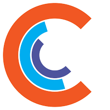

Ciklum is a global software engineering and solutions company. I worked as a Middle QA Engineer embedded in a product team, owning the full QA process for desktop and Unity3D-based applications — from test documentation to CI integration and automation framework development.